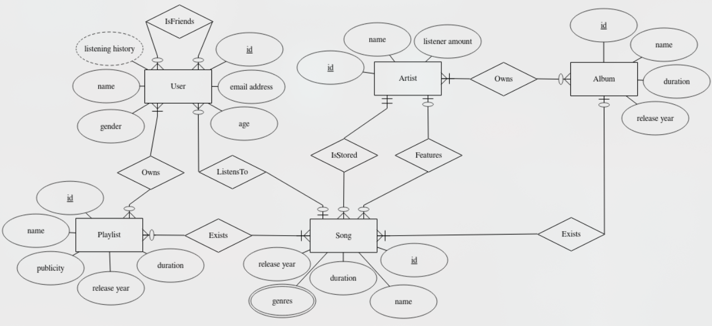

This was a university course assignment from the University of Jyväskylä where I study computer science and cyber-security. The task was to plan, build and optimize an SQLite-relational database for a subject of my choice. I chose Spotify.
In the University of Jyväskylä, the grading system is from 0-5 and from this assignment I got a 5 (proof at the bottom).
The practical assignment is one of the assessed components of this course. In the assignment, your task is to design and optimize an SQLite relational database for a domain of your own choosing.
You can find the detailed instructions and assessment criteria for the assignment below. Summary of the instructions:
You can find the full and detailed instructions on the assignment page of the course here. It is in Finnish but translatable for example with google translate or ChatGPT :)
Quick jump to different parts of the assignment:
Task 1
Task 2
Task 3
Task 4
Task 5
Task 6
Task 7
The first task was to choose the subject and write a database requirement specification for it. The relational database was to be made for a real use. I chose spotify as my subject because I'm very interested in music and it felt like it would be fairly logical to make.
Here is my requirement specification:
Spotify
Spotify is a digital music streaming application through which people can listen to music. The goal of the application is to allow people to enjoy music they like, so they must be able to choose what they want to listen to at any given time. Artists must also be able to upload music to the platform for users to listen to. The structure of the application's database should be based on the relationships between users, songs, and playlists.
The database must store user information, artists, songs, albums, and playlists (both public and private).
For users, the database must store the user ID, email address, name, age, and gender. A user can have friends and a listening history that stores the last 20 songs played. A user may own zero or many playlists. A user can listen to one song at a time.
For artists, the database must store the artist ID, name, and their monthly listener count. Artists may have zero or many songs uploaded to Spotify, and they may also have albums.
For songs, the database must store the song ID, name, duration, genre (there may be multiple genres), and release year. A song may have featured artists (artists performing on the song in addition to the main artist). A song has one main artist. A song can belong to at most one album, but it can appear in many playlists. A song can be listened to by zero or many users.
For albums, the database must store the album ID, name, duration, and release year. Albums must contain at least one song and are owned by the performing artist(s).
For playlists, the database must store the playlist ID, name, duration, visibility (public or private), and release year. A playlist must contain at least one song in order to exist. A playlist can be owned by one or many users.
The second task included drawing an Entity-Relationship model according to the requirement specification. Here is the model I made:
 The third task required me to transform the ER-model into a relational database equation in the following format:
R ({|a|}, b, c) - Relation R, which has primary key a and attributes b and c.
S ({|a, b|}, c) - Relation S, which has primary keys a and b, and attribute c.
Kissa ({|nimi|}, ikä) - Relation Kissa (Cat), which has primary key nimi (name) and attribute ikä (age).
User ({|id|}, name, age, gender, email address) \ IsFriends ({|User_id, User_id2|}) -- User can be a friend to another User, that's why two user IDs. \ IsFriends.user_id -> User.id \ IsFriends.user_id2 -> User.id \ Listening history ({|user_id, song_id|}) Listening history.user_id -> User.id \ Listening history.song_id -> Song.id \ OwnsPlaylist ({|user_id, playlist_id|}) \ OwnsPlaylist.user_id -> User.id \ OwnsPlaylist.playlist_id -> Playlist.id \ Artist ({|id|}, name, listener amount) \ OwnsAlbum ({|artist_id, album_id|}) \ OwnsAlbum.artist_id -> Artist.id \ OwnsAlbum.album_id -> Album.id \ Song ({|id|}, artist_id, album_id, name, duration, release year) \ Song.artist_id -> Artist.id \ Song.album_id -> Album.id \ Song_genres ({|song_id, genre|}) \ Song_genres.song_id -> Song.id \ Albumi ({|id|}, name, duration, release year) \ Soittolista ({|id|}, name, publicity, release year, duration) \ ExistsSong ({|playlist_id, song_id|}) \ ExistsSong.playlist_id -> Playlist.id \ ExistsSong.song_id -> Song.id \
The fourth task was to simply turn the plan into an SQLite-database. We needed to use DDL (Data Definition Language) as our structural guide.
Every relation had to have a database table. And after creating the tables, I needed to add sample data in the database.
CREATE TABLE User (
id INTEGER,
name TEXT NOT NULL UNIQUE,
age INTEGER,
gender TEXT,
email TEXT,
PRIMARY KEY (id)
);
CREATE TABLE IsFriend (
user_id INTEGER,
user_id2 INTEGER,
PRIMARY KEY (user_id, user_id2),
FOREIGN KEY (user_id) REFERENCES User (id)
ON DELETE RESTRICT,
FOREIGN KEY (user_id2) REFERENCES User (id)
ON DELETE RESTRICT
);
CREATE TABLE ListeningHistory (
user_id INTEGER,
song_id INTEGER,
PRIMARY KEY (user_id, song_id),
FOREIGN KEY (user_id) REFERENCES User (id)
ON DELETE RESTRICT,
FOREIGN KEY (song_id) REFERENCES Song (id)
ON DELETE CASCADE
);
CREATE TABLE OwnsPlaylist (
user_id INTEGER,
playlist_id INTEGER,
PRIMARY KEY (user_id, playlist_id),
FOREIGN KEY (user_id) REFERENCES User (id)
ON DELETE RESTRICT,
FOREIGN KEY (playlist_id) REFERENCES Playlist (id)
ON DELETE RESTRICT
);
CREATE TABLE Artist (
id INTEGER,
name TEXT NOT NULL UNIQUE,
listener_count INTEGER, -- listener count can be NULL if
-- no one listens to the artist's songs
PRIMARY KEY (id)
);
CREATE TABLE OwnsAlbum (
artist_id INTEGER,
album_id INTEGER,
PRIMARY KEY (artist_id, album_id),
FOREIGN KEY (artist_id) REFERENCES Artist (id)
ON DELETE RESTRICT,
FOREIGN KEY (album_id) REFERENCES Album (id)
ON DELETE RESTRICT
);
CREATE TABLE Song (
id INTEGER,
artist_id INTEGER NOT NULL,
album_id INTEGER, -- can be NULL if the song is not
-- part of any album
name TEXT NOT NULL UNIQUE,
duration INTEGER NOT NULL, -- seconds
release_year INTEGER NOT NULL,
PRIMARY KEY (id),
FOREIGN KEY (artist_id) REFERENCES Artist (id)
ON DELETE RESTRICT,
FOREIGN KEY (album_id) REFERENCES Album (id)
ON DELETE RESTRICT
);
CREATE TABLE Song_Genres (
song_id INTEGER,
genre TEXT NOT NULL,
PRIMARY KEY (song_id, genre),
FOREIGN KEY (song_id) REFERENCES Song (id)
ON DELETE CASCADE
);
CREATE TABLE Album (
id INTEGER,
name TEXT NOT NULL UNIQUE,
duration INTEGER NOT NULL, -- seconds
release_year INTEGER NOT NULL,
PRIMARY KEY (id)
);
CREATE TABLE Playlist (
id INTEGER,
name TEXT NOT NULL UNIQUE,
visibility TEXT NOT NULL,
duration INTEGER NOT NULL, -- seconds
release_year INTEGER NOT NULL,
PRIMARY KEY (id)
);
CREATE TABLE ContainsSong (
playlist_id INTEGER,
song_id INTEGER,
PRIMARY KEY (playlist_id, song_id),
FOREIGN KEY (playlist_id) REFERENCES Playlist (id)
ON DELETE RESTRICT,
FOREIGN KEY (song_id) REFERENCES Song (id)
ON DELETE CASCADE
);
-- Then insert sample data into the tables
-- using the INSERT INTO command.
INSERT INTO User
VALUES (1, 'Jonas Kilpinen', 25, 'Male', 'jonaskilpinen@gmail.com'),
(2, 'Mila Giorgio', 28, 'Female', 'milagiorgio@gmail.com'),
(3, 'Sanna Mäkinen', 17, 'Female', 'sanna.mäkinen@gmail.com'),
(4, 'Juha Vainio', 42, 'Male', 'vainijuha@gmail.com');
INSERT INTO Artist
VALUES (1, 'Nightwish', 2635139),
(2, 'potsu', 836000),
(3, 'Kumo 99', 78033),
(4, 'Coldplay', 96572095),
(5, 'M83', 13016350),
(6, 'Lofi Girl', 312314);
INSERT INTO Album
VALUES (1, 'Yesterwynde', 7980, 2024),
(2, 'Hurry Up, We’re Dreaming', 4380, 2011),
(3, 'Moon Music', 2640, 2024),
(4, 'Headplate', 1762, 2023),
(5, 'A Rush of Blood to the Head', 3251, 2002);
INSERT INTO OwnsAlbum
VALUES (2, 1),
(5, 2),
(4, 3),
(3, 4),
(4, 5);
INSERT INTO Song
VALUES (1, 2, NULL, 'just friends', 172, 2018),
(2, 4, 3, 'WE PRAY', 233, 2024),
(3, 5, 2, 'Klaus I Love You', 104, 2011),
(4, 3, NULL, 'Gomi', 196, 2023),
(5, 4, 5, 'The Scientist', 309, 2002),
(6, 1, 1, 'The Children Of ’Ata', 337, 2024),
(7, 6, NULL, 'Snowman', 195, 2023);
INSERT INTO Song_Genres
VALUES (1, 'Lo-Fi'),
(2, 'Pop, Alternative Hip-Hop'),
(3, 'Atmospheric, Synthwave'),
(4, 'J-Pop, Electronica'),
(5, 'Melancholic Rock'),
(6, 'Metal, Orchestral'),
(7, 'Lo-Fi');
INSERT INTO Playlist
VALUES (1, 'jams', 'public', 172, 2025),
(2, 'Gym', 'private', 533, 2019),
(3, 'Moody', 'public', 413, 2023),
(4, 'AllSongs', 'public', 1351, 2009),
(5, 'Groovy', 'private', 601, 2020);
INSERT INTO ContainsSong
VALUES (1, 1),
(2, 4),
(2, 6),
(3, 3),
(3, 5),
(4, 1),
(4, 2),
(4, 3),
(4, 4),
(4, 5),
(4, 6),
(5, 1),
(5, 2),
(5, 4);
INSERT INTO ListeningHistory
VALUES (2, 1),
(2, 3),
(2, 2),
(3, 5),
(3, 1),
(3, 2),
(1, 6),
(1, 4);
INSERT INTO IsFriend
VALUES (1, 2),
(2, 3),
(1, 3),
(4, 3),
(3, 2),
(4, 2),
(1, 4);
INSERT INTO OwnsPlaylist
VALUES (1, 1),
(3, 2),
(2, 3),
(1, 4),
(4, 5);
.tables
SELECT ' ' AS '';
SELECT 'Inserting users:' AS '';
SELECT * FROM User;
SELECT 'Inserting artists:' AS '';
SELECT * FROM Artist;
SELECT 'Inserting albums:' AS '';
SELECT * FROM Album;
SELECT 'Inserting album ownership:' AS '';
SELECT * FROM OwnsAlbum;
SELECT 'Inserting songs:' AS '';
SELECT * FROM Song;
SELECT 'Inserting song genres:' AS '';
SELECT * FROM Song_Genres;
SELECT 'Inserting playlists:' AS '';
SELECT * FROM Playlist;
SELECT 'Inserting existing songs in playlists:' AS '';
SELECT * FROM ContainsSong;
SELECT 'Inserting recently played songs:' AS '';
SELECT * FROM ListeningHistory;
SELECT 'Inserting friends:' AS '';
SELECT * FROM IsFriend;
SELECT 'Inserting playlist ownership:' AS '';
SELECT * FROM OwnsPlaylist;
The fifth task was to write 1-5 SQL query statement examples that are essential and retrieve data from the database. This is done by using DML (Data Management Language).
Guide text for all the examples:
Provide one example query here that would be needed in the target domain. The query can be a retrieval, deletion, or update query. For example, if your database is intended for an application, the example query could be one that the application might need.
Also include a short description of the query in the comments. The description should explain what the query does and how it could be used in the target domain.
DELETE
FROM Song
WHERE artist_id IN
(SELECT id
FROM Artist
WHERE name = 'Kumo 99');
SELECT *
FROM Song;
-- This query is useful if an artist decides
-- to delete their account. In that case, the artist's songs
-- can be removed using this query.
SELECT duration, name
FROM Song
WHERE artist_id IN
(SELECT id
FROM Artist
WHERE name = 'Coldplay')
ORDER BY duration DESC;
-- This query retrieves the songs created by a selected artist
-- (in this case, Coldplay) and orders them from longest to shortest duration.
-- This is useful when you want to organize an artist's uploaded songs
-- by duration or by any other attribute; simply replace ORDER BY with another attribute.
SELECT duration, name
FROM Song
WHERE artist_id IN
(SELECT id
FROM Artist
WHERE name = 'Coldplay')
ORDER BY duration DESC;
-- This query retrieves the songs created by a selected artist
-- (in this case, Coldplay) and orders them from longest to shortest duration.
-- Useful for organizing songs by duration or any other attribute.
SELECT duration, name
FROM Song
WHERE artist_id IN
(SELECT id
FROM Artist
WHERE name = 'Coldplay')
ORDER BY duration DESC;
-- This query retrieves the songs created by a selected artist
-- (here, Coldplay) and sorts them from longest to shortest.
-- Handy for sorting an artist’s uploaded songs by duration or any other attribute.
SELECT p.name AS playlist, s.name AS song, s.duration AS song_duration_seconds
FROM Playlist p
JOIN ContainsSong cs ON p.id = cs.playlist_id
JOIN Song s ON cs.song_id = s.id
WHERE p.name = 'Groovy';
SELECT ' ' AS '';
SELECT p.name, COUNT(*) AS song_count
FROM Playlist p
JOIN ContainsSong cs ON p.id = cs.playlist_id
WHERE p.name = 'Groovy';
-- This query identifies which songs, and how many, are in a specific playlist.
-- It makes it much easier to understand the contents of the playlist.
The sixth task required me to find all the functional dependencies in my relational database using the schema from task 3 and the requirement specification.
User: The primary key uniquely identifies the other attributes: {id} -> {name, age, gender, email} There are no other functional dependencies, since the other attributes do not determine anything. IsFriend: There are no other attributes besides the primary key, so it is the only functional dependency: {user_id, user_id2} -> {user_id, user_id2} This is a trivial dependency because the attributes on the left and right sides are the same. This is based on the axiom of reflectivity. ListeningHistory: There are no other attributes besides the primary key, so it is the only functional dependency: {user_id, song_id} -> {user_id, song_id} This is a trivial dependency because the attributes on the left and right sides are the same. This is based on the axiom of reflectivity. OwnsPlaylist: There are no other attributes besides the primary key, so it is the only functional dependency: {user_id, playlist_id} -> {user_id, playlist_id} This is a trivial dependency because the attributes on the left and right sides are the same. This is based on the axiom of reflectivity. Artist: The primary key uniquely identifies the other attributes: {id} -> {name, listener_count} There are no other functional dependencies, since the other attributes do not determine anything. OwnsAlbum: There are no other attributes besides the primary key, so it is the only functional dependency: {artist_id, album_id} -> {artist_id, album_id} This is a trivial dependency because the attributes on the left and right sides are the same. This is based on the axiom of reflectivity. Song: The primary key uniquely identifies the other attributes: {id} -> {artist_id, album_id, name, duration, release_year} There are no other functional dependencies, since the other attributes do not determine anything. Song_Genres: There are no other attributes besides the primary key, so it is the only functional dependency: {song_id, genre} -> {song_id, genre} This is a trivial dependency because the attributes on the left and right sides are the same. This is based on the axiom of reflectivity. Album: The primary key uniquely identifies the other attributes: {id} -> {name, duration, release_year} There are no other functional dependencies, since the other attributes do not determine anything. Playlist: The primary key uniquely identifies the other attributes: {id} -> {name, visibility, duration, release_year} There are no other functional dependencies, since the other attributes do not determine anything. ContainsSong: There are no other attributes besides the primary key, so it is the only functional dependency: {playlist_id, song_id} -> {playlist_id, song_id} This is a trivial dependency because the attributes on the left and right sides are the same. This is based on the axiom of reflectivity.
The seventh and final task was to examine in what normal form each relation is. And if a relation isn't in the 4th normal form, I had to normalize it and show the resulting relation.
The relations were to be examined using 1NF, 2NF, 3NF, BCNF and 4NF.
My answer:
All relations are in 1NF except for Song_Genres, because in that relation the attribute genre is multivalued. Otherwise, all relations are in 1NF since each relation has an appropriate primary key, the order of tuples does not matter, and each attribute has a clear data type. All attributes other than genre are atomic, not multivalued. User relation: 2NF is satisfied because the relation is in 1NF and no non-key attribute depends on only part of the primary key (the primary key consists of only one attribute). 3NF is satisfied because 2NF is satisfied and all non-key attributes depend only on the primary key. BCNF is satisfied because 3NF is satisfied and all attributes depend only on a candidate key (which is id) and nothing else. 4NF is satisfied because BCNF is satisfied and there are no multivalued dependencies in the relation. IsFriend relation: 4NF is satisfied because all previous normal forms are satisfied: the only functional dependency is the primary key, and there are no multivalued dependencies. The dependency is trivial since both sides are the same, so it does not violate any NF rules. ListeningHistory relation: 4NF is satisfied for the same reason as above: the only functional dependency is the primary key, and there are no multivalued dependencies. OwnsPlaylist relation: 4NF is satisfied because the only functional dependency is the primary key, and there are no multivalued dependencies. The dependency is trivial, so it does not violate any NF rules. Artist relation: 2NF is satisfied because the relation is in 1NF and no non-key attribute depends on only part of the primary key (the primary key has only one attribute). 3NF is satisfied because 2NF is satisfied and all non-key attributes depend only on the primary key. BCNF is satisfied because 3NF is satisfied and all attributes depend only on a candidate key (id) and nothing else. 4NF is satisfied because BCNF is satisfied and there are no multivalued dependencies. OwnsAlbum relation: 4NF is satisfied because the only functional dependency is the primary key, and there are no multivalued dependencies. Both sides of the dependency are the same, so it does not violate any NF rules. Song relation: 2NF is satisfied because the relation is in 1NF and no non-key attribute depends on only part of the primary key (the primary key has only one attribute). 3NF is satisfied because 2NF is satisfied and all non-key attributes depend only on the primary key. BCNF is satisfied because 3NF is satisfied and all attributes depend only on a candidate key (id) and nothing else. 4NF is satisfied because BCNF is satisfied and there are no multivalued dependencies. Song_Genres relation: As mentioned before, this relation does not even satisfy 1NF, so it cannot satisfy 4NF either. To fix this, a separate relation named Genre would be created with attributes id and genre. Then a many-to-many relationship would be established between Song and Genre. As a result, the multivalued attribute genre is removed, and the updated relation structure would satisfy 4NF: the only functional dependency is the primary key, there are no multivalued dependencies, and both sides of each dependency are the same, so no NF rules are violated. Album relation: 2NF is satisfied because the relation is in 1NF and no non-key attribute depends on only part of the primary key. 3NF is satisfied because 2NF is satisfied and all non-key attributes depend only on the primary key. BCNF is satisfied because 3NF is satisfied and all attributes depend only on a candidate key (id) and nothing else. 4NF is satisfied because BCNF is satisfied and there are no multivalued dependencies. Playlist relation: 2NF is satisfied because the relation is in 1NF and no non-key attribute depends on only part of the primary key. 3NF is satisfied because 2NF is satisfied and all non-key attributes depend only on the primary key. BCNF is satisfied because 3NF is satisfied and all attributes depend only on a candidate key (id) and nothing else. 4NF is satisfied because BCNF is satisfied and there are no multivalued dependencies. ContainsSong relation: 4NF is satisfied because the only functional dependency is the primary key, and there are no multivalued dependencies. Both sides of the dependency are the same, so no NF rules are violated.
The grading of my work by the professor.
Feedback from the professor:
Excellent work! My only remarks concern T6 and T7. However, in light of the current requirements, T6 does not actually violate anything, and T7 can be interpreted as a minor clarity issue. See my notes below, especially regarding the Kappale_genret relation. In general, in an ER diagram, multivalued attributes should be transformed directly into 4NF and should not require further corrections. On the other hand, the correction you proposed is a so-called generally “good” practice if the stored data is a classification factor with a limited set of values (e.g. genres, which are numerous in the world but not infinite). --- T6: Good! Based on T4 (and on the domain itself), I could assume that the username uniquely identifies a user, meaning that for User we have { name } → { id, age, gender, email }. At least in T4, the name is marked as UNIQUE, so it is automatically identifying. This also makes sense, since a user logs into Spotify using their name (or email, but certainly not their ID). Similarly, based on T4, for Artist the name uniquely identifies the artist, meaning { name } → { id, listener count }. The same seems to apply to Playlist as well. Both of these are non-trivial, but fortunately they do not affect normalization, since they are both candidate keys. T7: The correction proposed for the Kappale_genret relation is in itself OK, but perhaps unnecessarily complex. The correction does not actually require a change to the relation; instead, the rows in the database where the genre column contains two different genres should be fixed. That is, in T4 the following: INSERT INTO Kappale_genret VALUES (2, 'Pop, Alternative Hip-Hop'), (3, 'Atmospheric, Synthwave'), (4, 'J-Pop, Electronica'); should be corrected to: INSERT INTO Kappale_genret VALUES (2, 'Pop'), (2, 'Alternative Hip-Hop'), (3, 'Atmospheric'), (3, 'Synthwave'), (4, 'J-Pop'), (4, 'Electronica'); This is acceptable, since the primary key of Kappale_genret is { song_id, genre }.
The email address of the professors/teachers of this course:
itka2004-opet@tim.jyu.fi